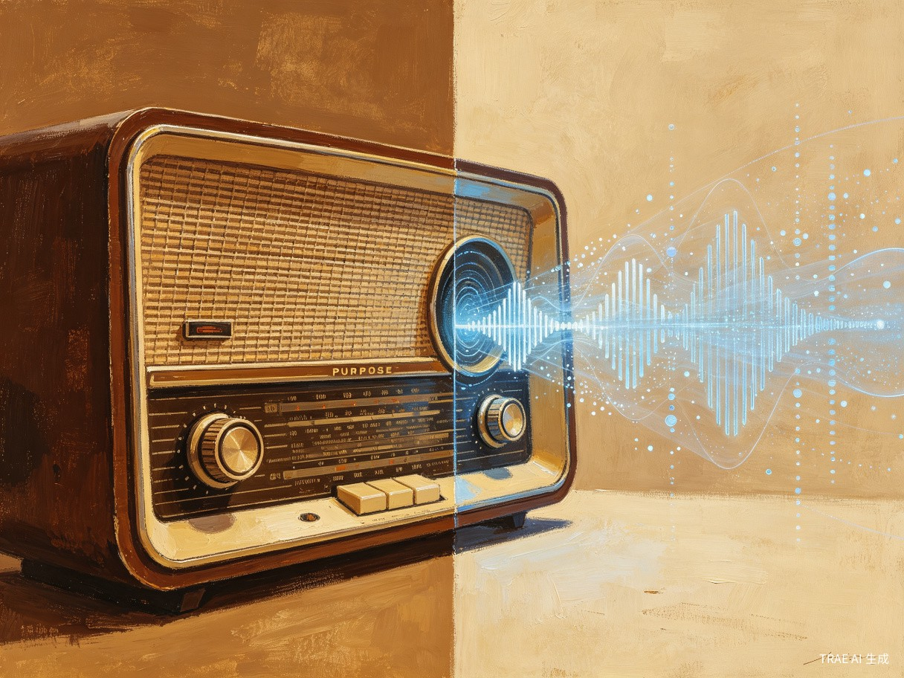
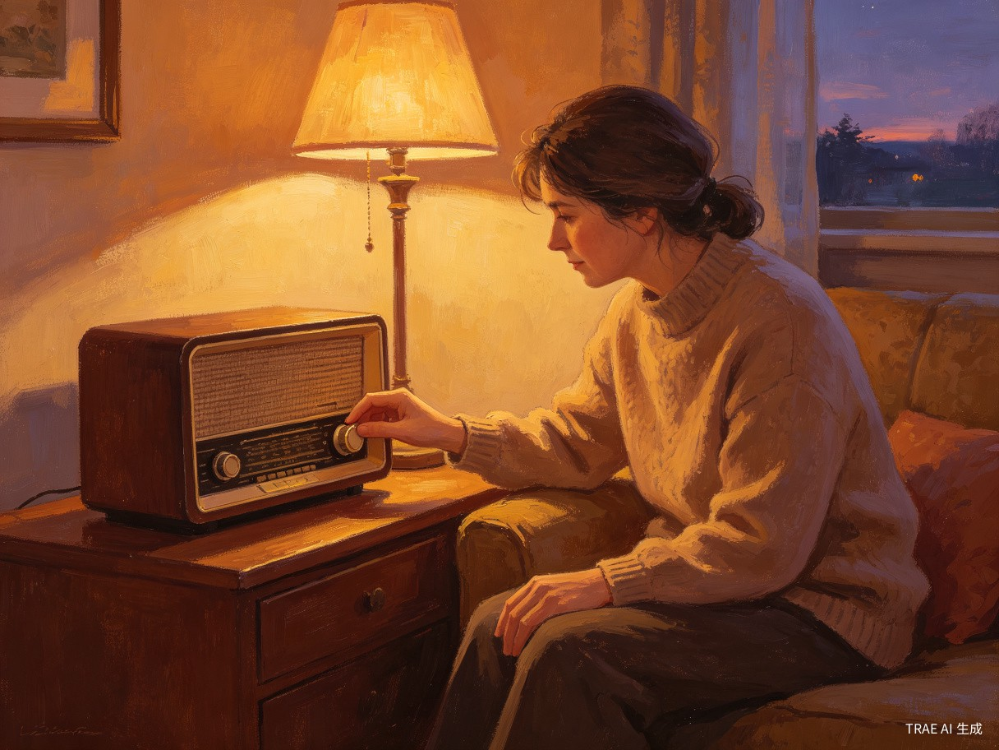

项目概述
惊艳脑洞
很多科技产品在做"数字亲人复活"时，都是冷冰冰的网页聊天框或惊悚的 3D 换脸。这个项目走复古情感路线，将 AI 塞进一个真正的"实体老收音机"里。它不是试图"复活"逝者，而是在某个深夜，当你独自转动旋钮时，让那个熟悉的声音像电台信号一样，从遥远的记忆波段中缓缓传来。

想解决什么问题
现有的"数字亲人复活"产品多为冰冷的网页聊天框或惊悚的 3D 换脸，缺乏真实情感温度。本项目旨在用一种极具中式含蓄美学的方式，为经历丧亲之痛的人提供一个充满仪式感、克制且温柔的情感宣泄口。
为什么会想到做这个
灵感来源于当代人在面对亲人离去时的巨大空虚感。我们不想用激进的视觉技术去"惊吓"生者，而是希望通过声音和老旧硬件的触觉，让思念像深夜电台的信号一样，在特定的波段被重新接收。收音机本身就是一个充满集体记忆的媒介 —— 它不需要屏幕，不需要打字，只需要你静静地听。
大概是什么产品
这是一款基于 TRAE 开发的软硬一体化智能实体硬件（或 1:1 网页动态仿真系统）。用户通过转动实体收音机旋钮，触发不同的"记忆频段"，每个频段对应逝者生前的一段语音记忆或 AI 生成的温柔回应。产品结合了声音克隆（TTS）、大语言模型对话、以及物理旋钮的触觉反馈，创造出一种前所未有的情感交互体验。
目标用户及痛点
面向哪些用户
经历过至亲离去、处于长期或中度悲伤期、渴望获得情感抚慰的普通大众。他们不一定是科技爱好者，但内心深处保留着对旧时光和传统物件的情感依恋。
在什么场景下使用
在深夜孤独、工作受挫、或亲人忌日等情绪低落的时刻，用户独自在房间里拨动收音机旋钮。不需要打开手机，不需要面对刺眼的屏幕，只需要在黑暗中触摸那个熟悉的木质外壳，转动旋钮，等待那个声音从沙沙的电流噪声中浮现。

当前痛点
技术门槛过高
普通人不会微调大模型，也不会训练声音克隆模型，现有的 AI 工具对非技术用户极不友好。
交互方式机械
对着手机打字聊天无法还原过去与长辈相处时那种慢节奏、充满生活烟火气的互动感。
情感表达突兀
3D 换脸和视频合成技术往往产生"恐怖谷"效应，让生者感到不适甚至恐惧。
缺乏仪式感
现有的数字纪念产品缺乏物理世界的触感和仪式感，无法提供真正的情感慰藉。
价值与意义
社会价值
本项目具备极高的社会心理疗愈价值。它通过中式传统情感的"留白"艺术，将前沿的 AI 声音克隆与大模型技术，包装成一种符合国人心理习惯的临终关怀与丧亲抚慰工具。
"我们不试图让逝者'复活'，我们只是为他们留下一扇门。当你想他们的时候，转动旋钮，门就会开一条缝，让光透进来。"
在中国传统文化中，情感的表达往往是含蓄而克制的。本项目正是这种美学观念的技术化呈现 —— 不喧哗，不张扬，只在需要时，轻轻响起。
技术与落地效率
借助 TRAE 的 MCP（模型上下文协议）无边界调用能力，项目能完美打破物理硬件与底层大模型的壁垒，将串口传感器（旋钮频率）的数据实时转化为大模型的触发指令。
flowchart LR
A[物理旋钮] -->|串口信号| B[TRAE MCP]
B -->|触发指令| C[大语言模型]
C -->|生成文本| D[声音克隆 TTS]
D -->|音频输出| E[收音机扬声器]
E -->|沙沙声+人声| F[用户聆听]
利用 TRAE Work 的自动化任务拆解，我们能在极短时间内跑通"物理旋钮信号 -> 声音噪声合成 -> 亲人音色 TTS 输出"的完整软硬件闭环，展现出 AI 智能体走向物理世界的无限可能。
核心功能模块
| 模块 | 功能描述 | 技术实现 |
|---|---|---|
| 频段记忆系统 | 不同旋钮位置对应不同主题的记忆对话 | 电位器 ADC 采样 + 频段映射算法 |
| 噪声合成层 | 模拟真实收音机的沙沙电流声 | Web Audio API / 硬件白噪声生成 |
| AI 对话引擎 | 基于逝者生平的大模型个性化回应 | TRAE MCP + LLM 微调 |
| 声音克隆 TTS | 还原逝者独特音色与说话方式 | 声音克隆模型 + 情感控制 |
| 触觉反馈 | 旋钮转动时的阻尼感和刻度感 | 物理旋钮改装 + 阻尼器调校 |
| 网页仿真系统 | 1:1 还原的在线体验版本 | WebGL + Web Audio + 3D 建模 |
产品差异化优势
与市面上现有的"数字永生"产品相比，"外公的旧收音机"在多个维度上实现了差异化突破：
情感温度
复古硬件的触觉与听觉体验，远胜于冰冷的屏幕交互。每一次旋钮转动都是一次有仪式感的情感行为。
中式美学
以"留白"和"含蓄"为核心设计理念，不追求视觉上的"逼真"，而追求情感上的"真实"。
技术普惠
借助 TRAE 的低代码能力，普通人无需技术背景也能定制属于自己的记忆收音机。
隐私安全
所有语音数据本地处理，不上传云端，确保逝者声音数据的安全与隐私。
落地路径与里程碑
项目计划分三个阶段推进，从网页仿真验证到实体硬件量产：
第一阶段：网页仿真验证（1-2 个月）
- 开发 1:1 交互式网页版收音机仿真器
- 集成大模型对话与基础 TTS 输出
- 收集种子用户反馈，验证情感交互假设
第二阶段：硬件原型开发（2-3 个月）
- 改装实体老式收音机，嵌入微控制器
- 打通旋钮信号 -> TRAE MCP -> 音频输出链路
- 实现声音克隆与个性化对话引擎
第三阶段：产品化与推广（3-6 个月）
- 优化硬件量产方案，控制成本
- 建立用户内容平台，支持自定义记忆频段
- 与心理咨询、临终关怀机构合作推广
结语
在这个追求"更快、更强、更逼真"的科技时代，"外公的旧收音机"选择了一条相反的路 —— 更慢、更温柔、更克制。我们相信，真正的情感连接不需要高分辨率的屏幕，不需要完美的 3D 建模，只需要在深夜的某个时刻，一个熟悉的声音从旧收音机里轻轻传来，对你说：
"这么晚了还没睡？别太累，记得盖好被子。"
这，就是技术应该有的温度。